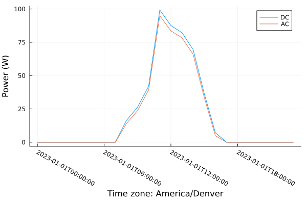

PVlib
Overview
PVlib is a Julia package that provides functions and data structures for simulating the performance of photovoltaic (PV) energy systems and accomplishing related solar-resource and PV modeling tasks. PVlib is developed based on the widely-used pvlib python project (pvlib/pvlib-python) and intended to encompass a basic PV modeling approach while allowing for automatic differentiability within the Julia ecosystem.
The source code for PVlib is hosted on GitHub. Please see the Installation instructions in this documentation for help getting started.
For examples of how to use PVlib, see the quick start guide. This documentation assumes general familiarity with Julia, including common packages such as DataFrames and Dates/TimeZones. If you are new to Julia, the official Julia documentation and community tutorials are a good place to start.
PVlib follows a variable naming convention to promote consistency throughout the library (e.g., ghi, dni, dhi, poaglobal, apparentzenith).
This package also include functions for interfacing with floating structures in the floating_utilities.jl file.
Installation
PVlib can be installed using the Julia package manager. From the Julia REPL, type ] to enter the Pkg REPL mode and run
pkg> add PVlibQuick start
Example: PV power for Albuquerque, NM (Jan 1, 2023)
Load dependencies:
using PVlib
using Dates
using TimeZones
using PlotsSet site and time parameters:
latitude = 35.1
longitude = -106.6
altitude = 1500.0 # m
start_date = Date(2023, 1, 1)
end_date = Date(2023, 1, 1)
tz = TimeZone("America/Denver")America/Denver (UTC-7/UTC-6)Fetch weather data (PVGIS TMY):
weather_data = get_meteorological_data_pvgis(
latitude, longitude, start_date, end_date, tz, false
);WeatherSample × 24
time ghi dni dhi temp_air temp_dew relative_humidity pressure wind_speed wind_direction albedo
───────────────────────── ────── ───── ────── ──────── ──────── ───────────────── ──────── ────────── ────────────── ───────
2023-01-01T00:00:00-07:00 0.0 0.0 0.0 3.97 missing 92.1 81840.0 2.04 190.0 missing
2023-01-01T01:00:00-07:00 0.0 0.0 0.0 3.26 missing 79.1 81790.0 1.52 187.0 missing
2023-01-01T02:00:00-07:00 0.0 0.0 0.0 4.39 missing 73.4 81790.0 1.24 183.0 missing
2023-01-01T03:00:00-07:00 0.0 0.0 0.0 5.0 missing 68.0 81790.0 0.9 171.0 missing
2023-01-01T04:00:00-07:00 0.0 0.0 0.0 5.14 missing 65.55 81750.0 0.62 125.0 missing
2023-01-01T05:00:00-07:00 0.0 0.0 0.0 4.64 missing 65.4 81690.0 1.1 71.0 missing
2023-01-01T06:00:00-07:00 0.0 0.0 0.0 2.54 missing 73.1 81640.0 1.52 72.0 missing
2023-01-01T07:00:00-07:00 0.0 0.0 0.0 2.65 missing 73.1 81690.0 1.17 109.0 missing
2023-01-01T08:00:00-07:00 74.15 14.57 72.35 2.34 missing 78.95 81770.0 1.24 166.0 missing
2023-01-01T09:00:00-07:00 121.25 12.3 117.75 3.77 missing 76.15 81800.0 1.1 154.0 missing
… (14 more rows)
Calculate solar positions:
solar_pos = get_solar_position(latitude, longitude, altitude, weather_data);SolarPosition × 24
time apparent_zenith zenith apparent_elevation elevation azimuth equation_of_time
─────────────────── ────────────────── ────────────────── ─────────────────── ─────────────────── ────────────────── ───────────────────
2023-01-01T07:00:00 167.73272932133244 167.73272932133244 -77.73272932133243 -77.73272932133243 349.407703428582 -3.3253133744510706
2023-01-01T08:00:00 163.69996323318142 163.69996323318142 -73.69996323318142 -73.69996323318142 45.501963809106 -3.3449771632731427
2023-01-01T09:00:00 153.17486353847545 153.17486353847545 -63.17486353847545 -63.17486353847545 70.666616238468 -3.364631403790554
2023-01-01T10:00:00 141.2149586479052 141.2149586479052 -51.214958647905206 -51.214958647905206 83.57224821226038 -3.3842760620464105
2023-01-01T11:00:00 128.96374026344756 128.96374026344756 -38.96374026344756 -38.96374026344756 92.63197196145246 -3.4039111041274737
2023-01-01T12:00:00 116.78379068473672 116.78379068473672 -26.78379068473672 -26.78379068473672 100.38258447397851 -3.4235364955093246
2023-01-01T13:00:00 104.8935078789801 104.8935078789801 -14.893507878980104 -14.893507878980104 107.89101958482699 -3.44315220239514
2023-01-01T14:00:00 93.50899627413057 93.50899627413057 -3.5089962741305665 -3.5089962741305665 115.80198567872706 -3.462758191068133
2023-01-01T15:00:00 82.80470224274235 82.90615593377933 7.19529775725765 7.093844066220673 124.64871747766873 -3.4823544272367144
2023-01-01T16:00:00 73.42507766368301 73.47111146894758 16.574922336316988 16.52888853105241 134.9488963340048 -3.501940877213201
… (14 more rows)
Calculate plane-of-array irradiance for a south-facing array tilted at an angle equal to the latitude:
surface_tilt = latitude
surface_azimuth = 180.0
total_irradiance = get_total_irradiance(
surface_tilt, surface_azimuth, weather_data, solar_pos, 0.25
);TotalIrradiance × 24
time poa_global poa_direct poa_diffuse poa_sky_diffuse poa_ground_diffuse
───────────────────────── ─────────────────── ──────────────────── ──────────────────── ──────────────────── ──────────────────
2023-01-01T00:00:00-07:00 0.04158883083359672 0.013862943611198907 0.027725887222397813 0.027725887222397813 0.0
2023-01-01T01:00:00-07:00 0.04158883083359672 0.013862943611198907 0.027725887222397813 0.027725887222397813 0.0
2023-01-01T02:00:00-07:00 0.04158883083359672 0.013862943611198907 0.027725887222397813 0.027725887222397813 0.0
2023-01-01T03:00:00-07:00 0.04158883083359672 0.013862943611198907 0.027725887222397813 0.027725887222397813 0.0
2023-01-01T04:00:00-07:00 0.04158883083359672 0.013862943611198907 0.027725887222397813 0.027725887222397813 0.0
2023-01-01T05:00:00-07:00 0.04158883083359672 0.013862943611198907 0.027725887222397813 0.027725887222397813 0.0
2023-01-01T06:00:00-07:00 0.04158883083359672 0.013862943611198907 0.027725887222397813 0.027725887222397813 0.0
2023-01-01T07:00:00-07:00 0.04158883083359672 0.013862943611198907 0.027725887222397813 0.027725887222397813 0.0
2023-01-01T08:00:00-07:00 75.53667564156837 6.2187052002356555 69.3179704413327 67.63244563471589 1.6855248066168145
2023-01-01T09:00:00-07:00 118.76429760969468 7.659704674961231 111.10459293473345 108.34842458945646 2.756168345276989
… (14 more rows)
Load the desired PV module and inverter:
module_filename = "sam-library-sandia-modules-2015-6-30.csv"
module_name = "Canadian Solar CS5P-220M [ 2009]"
pv_module = read_solar_module(module_name, module_filename);
inverter_filename = "sam-library-cec-inverters-2019-03-05.csv"
inverter_name = "ABB: MICRO-0.25-I-OUTD-US-208 [208V]"
pv_inverter = read_solar_inverter(inverter_name, inverter_filename);SolarInverter
────────────
name │ ABB: MICRO-0.25-I-OUTD-US-208 [208V]
vac │ 208.0
pso │ 2.089607
paco │ 250.0
pdco │ 259.588593
vdco │ 40.0
c0 │ -4.1e-5
c1 │ -9.1e-5
c2 │ 0.000494
c3 │ -0.013171
pnt │ 0.075
vdcmax │ 50.0
idcmax │ 6.489715
mppt_low │ 30.0
mppt_high │ 50.0
cec_date │ n/a
cec_type │ Utility Interactive
Calculate the cell temperature and effective irradiance:
cell_temp = sapm_cell_temperature(total_irradiance, weather_data);
effective_irradiance = sapm_effective_irradiance(
total_irradiance, pv_module, solar_pos, surface_tilt, surface_azimuth, altitude
);EffectiveIrradiance × 24
time effective_irradiance
───────────────────────── ────────────────────
2023-01-01T00:00:00-07:00 0.0
2023-01-01T01:00:00-07:00 0.0
2023-01-01T02:00:00-07:00 0.0
2023-01-01T03:00:00-07:00 0.0
2023-01-01T04:00:00-07:00 0.0
2023-01-01T05:00:00-07:00 0.0
2023-01-01T06:00:00-07:00 0.0
2023-01-01T07:00:00-07:00 0.0
2023-01-01T08:00:00-07:00 77.85556558128803
2023-01-01T09:00:00-07:00 122.07471082647699
… (14 more rows)
Calculate the DC power components and AC power:
dc_components = sapm_dc_components(pv_module, effective_irradiance, cell_temp);
ac_power = sandia_ac_power(pv_inverter, dc_components);ACPower × 24
time ac_power
───────────────────────── ──────────────────
2023-01-01T00:00:00-07:00 -0.075
2023-01-01T01:00:00-07:00 -0.075
2023-01-01T02:00:00-07:00 -0.075
2023-01-01T03:00:00-07:00 -0.075
2023-01-01T04:00:00-07:00 -0.075
2023-01-01T05:00:00-07:00 -0.075
2023-01-01T06:00:00-07:00 -0.075
2023-01-01T07:00:00-07:00 -0.075
2023-01-01T08:00:00-07:00 13.933326496458339
2023-01-01T09:00:00-07:00 23.696633728026736
… (14 more rows)
Plot DC and AC power:
plot(
getfield.(dc_components, :time),
getfield.(dc_components, :p_mp),
label="DC",
xlabel="Time",
ylabel="Power (W)",
legend=:topright,
xrotation=-30,
bottom_margin=8Plots.mm,
)
plot!(getfield.(ac_power, :time), getfield.(ac_power, :ac_power); label="AC")
Floating PV
This package was specifically built to enable modeling of floating solar modules in Julia. Functions to enable floating solar modeling include conversion from 6 degree-of-freedom motions to solar module tilt and azimuth and allowing for smaller timesteps to account for ocean wave timescale simulations.
AD and Integration Notes
The current PV power path in PVlib is explicit and differentiable with respect to the numeric inputs used by SIRENOpt, including irradiance, surface tilt, surface azimuth, and array-area scaling applied outside the package. FLOWMath-based smooth approximations are used in the irradiance, SAPM, and inverter path so ForwardDiff can propagate gradients through the end-to-end AC power calculation.
SIRENOpt currently uses PVlib at the solar-array boundary: weather and solar position are mapped to photovoltaic DC or AC power output, and the higher-level ontology keeps generator and converter losses explicit in the system model. No implicit solve is used in this path.
Reference
Refer to pvlib/pvlib-python for more details on the theory behind the photovoltaic modeling.
See the API reference for all exported functions.